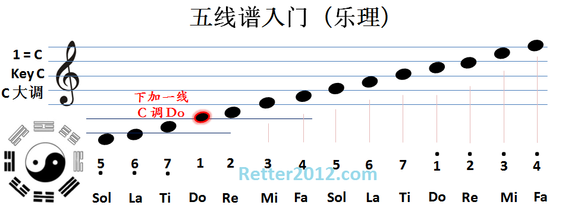

返回主页
乐谱基本常识

技巧：怎么按轻松就怎么按；怎么弹快就怎么弹。
观察别人是怎么游（演奏）的，能否模仿或改进。
21寸的 C调和F调即可弹奏很多音乐，不用大Size。
Ukulele各部分名称（1）
Ukulele各部分名称（2）
五线谱和简谱都是用竖线表示小节。
4分之3拍就是以四分音符为1拍，每小节有3拍。
4分之3拍的强弱规律是：强 弱 弱。四分之三（3/4）拍：蹦嚓嚓 蹦嚓嚓，即华尔兹（Waltz）节奏。
Auld lang syne《《友谊地久天长》》和Edelwaiss（《雪绒花》）都是四分之三（3/4）拍的歌曲。
四分之四（4/4或 四四拍）拍：强 弱 次强 弱。四二拍：强 弱。
四分之五（5/4）拍节奏（强 弱 次强 弱 弱）如王之涣的《登鹳雀楼》：
白日 依山尽，
黄河 入海流。
欲穷 千里目，
更上 一层楼。
全音和半音（第几品格）
《小星星》四线谱（指弹谱）
升调降调原理（四线谱）
现在就弹！弹奏 Ukulele 入门 。
version:1.0; jobnet@188.com © retter2012.com